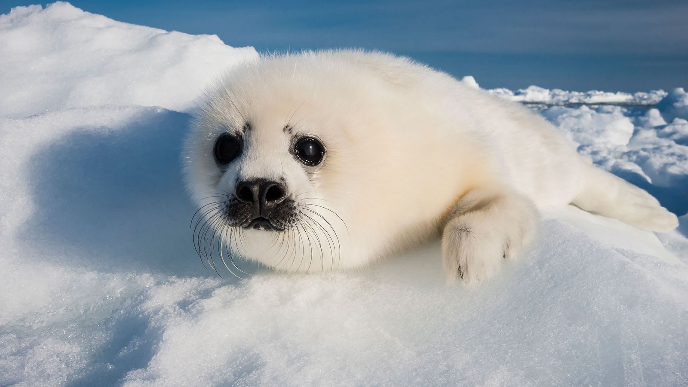

Um ecossistema é um conjunto de comunidades de seres vivos que habitam um determinado local e interagem entre si e com o meio ambiente. Este conceito inclui tanto os fatores bióticos, que são todos os seres vivos, como plantas, animais e microorganismos, quanto os fatores abióticos, que são elementos não vivos como água, solo, luz solar, temperatura e outros componentes físicos e químicos. O termo "ecossistema" foi introduzido pelo botânico Arthur George Tansley, um dos pioneiros nos estudos de ecologia, que destacou a importância das interações entre esses fatores para o funcionamento e a sustentabilidade dos ecossistemas.
Tipos de Ecossistemas: Ecossistemas terrestres e aquáticos.
Componentes: Os ecossistemas são compostos por fatores bióticos (produtores, consumidores e decompositores) e fatores abióticos (água, solo, luz, temperatura, etc.).
Interações Dinâmicas: Componentes de um ecossistema interagem de forma dinâmica, formando cadeias e teias alimentares complexas que permitem a transferência de energia e nutrientes.
Distinção de Termos: Ecossistema e bioma não são sinônimos. Um bioma é um grande conjunto de ecossistemas que compartilham características climáticas e geográficas semelhantes.
Os ecossistemas terrestres são compostos por organismos que vivem em terra firme e pelos elementos abióticos presentes nesse ambiente. Exemplos incluem florestas, savanas, desertos, pradarias e tundras. Cada tipo de ecossistema terrestre possui características específicas que influenciam a diversidade e a dinâmica das espécies que nele vivem.
Ecossistemas Aquáticos Os ecossistemas aquáticos são formados por comunidades biológicas que habitam ambientes de água doce ou salgada. Exemplos incluem mares, oceanos, rios, riachos, lagos e pântanos. Esses ecossistemas são fundamentais para a vida na Terra, pois fornecem habitats e recursos vitais para uma vasta gama de espécies.
Componentes do Ecossistema
Bióticos: Incluem todos os seres vivos de um ecossistema, como produtores (plantas e algas), consumidores (animais herbívoros, carnívoros e onívoros) e decompositores (fungos e bactérias).
Fatores Abióticos: São os elementos do ambiente que fornecem as condições necessárias para a vida, como água, luz solar, solo, umidade e temperatura. Esses fatores influenciam diretamente a saúde e a sustentabilidade dos ecossistemas.
Biodiversidade
Cada ecossistema possui uma variedade de espécies vegetais e animais específicas que coexistem e mantêm um equilíbrio dinâmico. A biodiversidade é crucial para a resiliência dos ecossistemas, permitindo que eles se adaptem a mudanças e resistam a perturbações.
Sucessão Ecológica
A sucessão ecológica é o processo pelo qual um ecossistema se desenvolve e se transforma ao longo do tempo, especialmente após eventos perturbadores como incêndios, inundações ou erupções vulcânicas. Este processo pode levar anos, décadas ou até séculos, resultando na formação de comunidades ecológicas maduras e estáveis.
Fluxo de Energia
A energia é fundamental para o funcionamento dos ecossistemas. Ela é capturada pelos produtores através da fotossíntese e passa por diferentes níveis tróficos de consumidores até chegar aos decompositores. Este fluxo de energia é essencial para a manutenção das funções ecológicas.
Funcionamento do Ecossistema
Os componentes dos ecossistemas interagem por meio das relações tróficas, que incluem cadeias e teias alimentares. Essas interações garantem a transferência de energia e nutrientes entre os organismos, mantendo o equilíbrio e a funcionalidade do ecossistema.
Amazônia:O maior ecossistema brasileiro e a maior floresta tropical do mundo, com uma enorme diversidade de flora e fauna. Desempenha um papel crucial na regulação do clima global e na conservação da biodiversidade.
Cerrado:O segundo maior ecossistema do Brasil, caracterizado por sua vegetação de savana. Abriga uma rica biodiversidade e é uma área de grande importância para a conservação.
Caatinga:Predomina no Nordeste do Brasil e é adaptada ao clima seco e quente. Este ecossistema único possui uma biodiversidade adaptada às condições áridas.
Mata Atlântica:Estende-se pela costa leste, nordeste, sudeste e sul do Brasil. É um dos ecossistemas mais ameaçados do país devido à intensa atividade humana e à urbanização.
Pantanal:É o menor bioma brasileiro, mas a maior planície inundada do mundo. Conhecido por sua rica biodiversidade e paisagens deslumbrantes.
Manguezal:Ecossistema de transição entre água doce e salgada, crucial para a reprodução de muitas espécies de peixes e crustáceos.
Mata dos Cocais: Área de transição entre a Floresta Amazônica e a Caatinga, caracterizada por palmeiras como o babaçu.
Um bioma é uma grande região que contém várias comunidades de plantas e animais com condições geoclimáticas similares. Um ecossistema, por outro lado, refere-se às interações específicas entre os fatores bióticos e abióticos em um ambiente determinado. Assim, um bioma pode conter múltiplos ecossistemas.
Nos ecossistemas, os seres vivos interagem entre si e com os diferentes fatores físicos que atuam sobre eles, como clima, temperatura e composição do solo. Essas interações determinam a estrutura e a dinâmica do ecossistema, influenciando os processos ecológicos e a sobrevivência das espécies.
Os fatores abióticos são os componentes físicos e químicos do ambiente que impactam os seres vivos. Exemplos incluem variações de temperatura, regime de chuvas, salinidade do solo ou da água. Esses fatores são essenciais para a sobrevivência dos organismos e para a manutenção das funções ecológicas.
Os fatores bióticos são os seres vivos que fazem parte de um ecossistema e suas interações. Isso inclui a relação entre presas e predadores, a competição entre espécies e o impacto da introdução de novas espécies. Essas interações bióticas são fundamentais para a estruturação das comunidades ecológicas.
A Amazônia é a maior floresta tropical do planeta e desempenha um papel vital no equilíbrio climático e na conservação da biodiversidade global. A data de 5 de setembro, Dia da Amazônia, foi estabelecida para celebrar e refletir sobre a importância deste ecossistema e para promover sua preservação.
ONGs como a WWF-Brasil trabalham na preservação da Amazônia e de outros ecossistemas, abordando temas como manejo florestal, conservação e sustentabilidade. Essas organizações enfatizam a necessidade de um desenvolvimento sustentável para proteger os ecossistemas e garantir o bem-estar das futuras gerações.
A disputa entre agronegócio e preservação do bioma amazônico continua. Dados recentes do Instituto de Pesquisas Espaciais (Inpe) mostram uma redução de 33% no desmatamento no primeiro semestre de 2023. Embora esse dado seja um sinal positivo para os esforços de conservação, ainda há muito a ser feito para proteger a Amazônia e outros ecossistemas brasileiros.